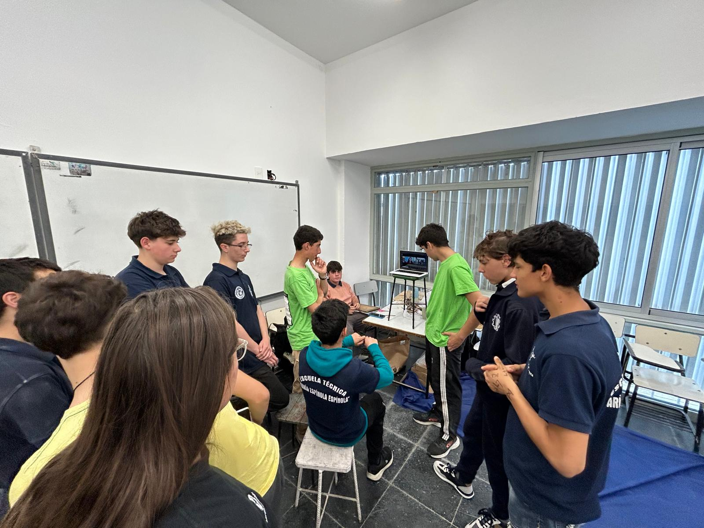

Etapas del Proyecto
Nuestro proyecto se desarrolló en etapas, guiado por los diferentes hitos de Las Olimpiadas Ceibal.
1. Etapa de Inscripción y Acompañamiento
En esta primera fase nos enfocamos en definir los objetivos, alcance y recursos necesarios para el proyecto.
Actividades realizadas:
- Análisis del problema a resolver
- Definición de objetivos específicos
- Asignación de roles y responsabilidades
- Creación del cronograma de trabajo
- Selección de herramientas y tecnologías
Resultado: Plan de proyecto detallado con cronograma y recursos definidos.
2. Etapa de Ejecución, Entrega y presentación de evidencia
Durante esta etapa implementamos la solución siguiendo el plan establecido, con reuniones regulares para monitorear el progreso.
Actividades principales:
- Desarrollo del prototipo inicial
- Implementación de funcionalidades clave
- Pruebas internas y correcciones
- Revisiones periódicas del equipo
- Documentación del proceso
Resultado: Prototipo funcional con las características principales implementadas.
3. Etapa de Cierre
En la fase final realizamos las pruebas finales, documentación completa y preparación para la presentación del proyecto.
Actividades de cierre:
- Pruebas finales de usabilidad
- Corrección de errores menores
- Preparación de documentación final
- Ensayos de presentación
- Evaluación del proceso y lecciones aprendidas
Resultado: Proyecto completado, documentado y listo para presentación.
Reflexiones del Proceso
El desarrollo del proyecto nos permitió aplicar conocimientos teóricos en un contexto práctico. La metodología por etapas nos ayudó a mantener el control sobre el progreso y a identificar oportunidades de mejora en cada fase.
Las principales lecciones aprendidas incluyen la importancia de la comunicación constante, la flexibilidad para adaptarse a cambios y la value de la retroalimentación continua.